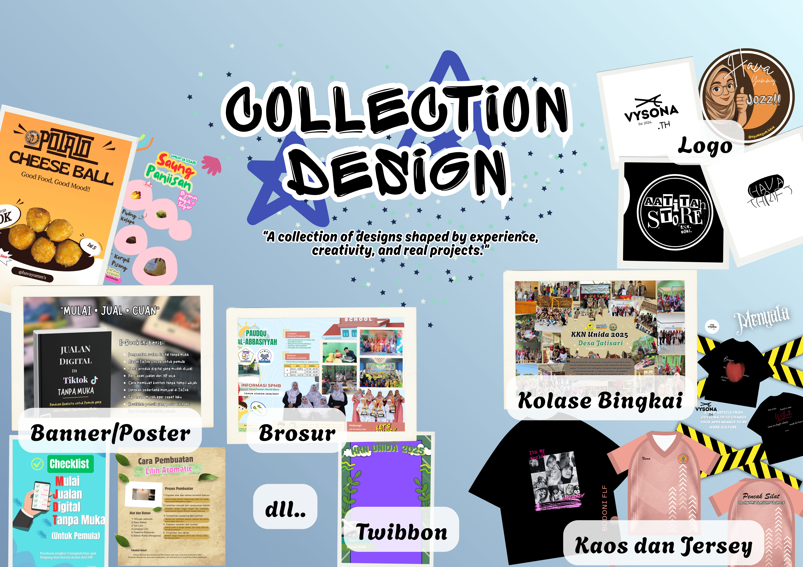
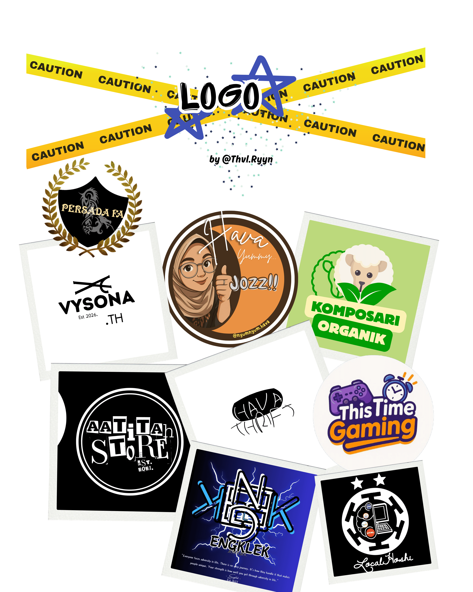
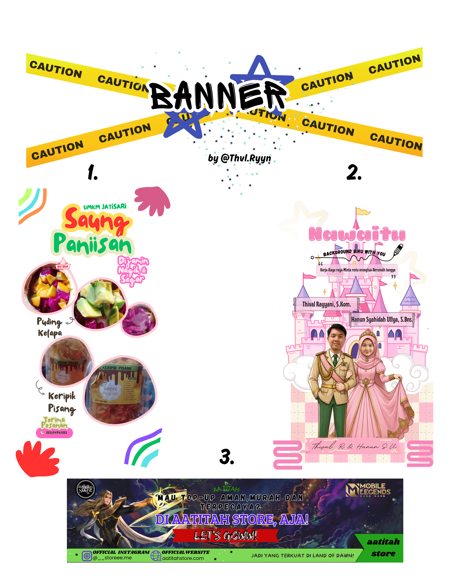
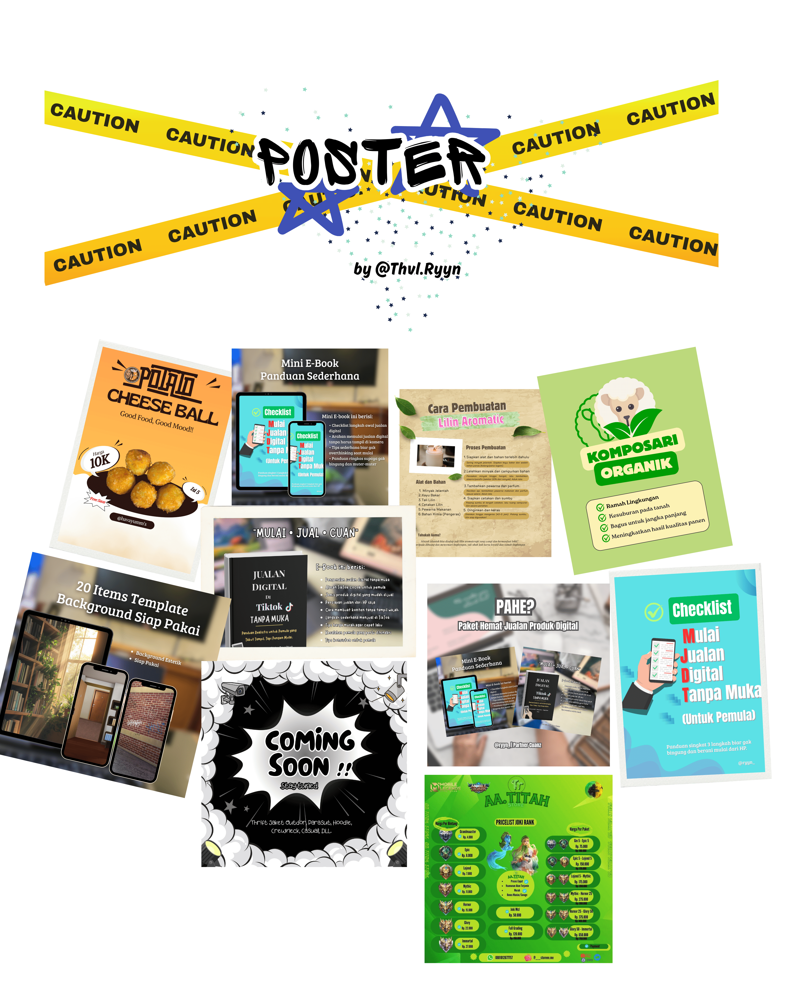
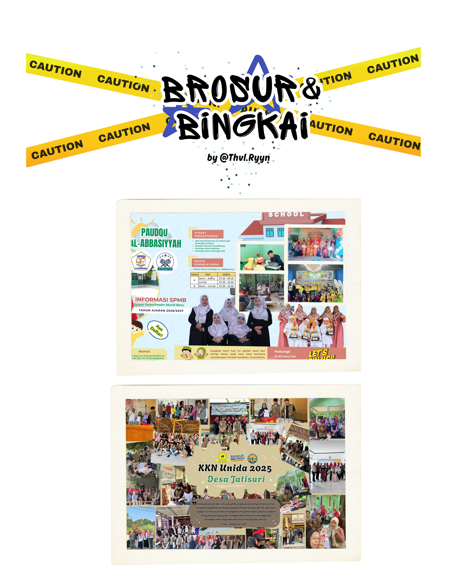
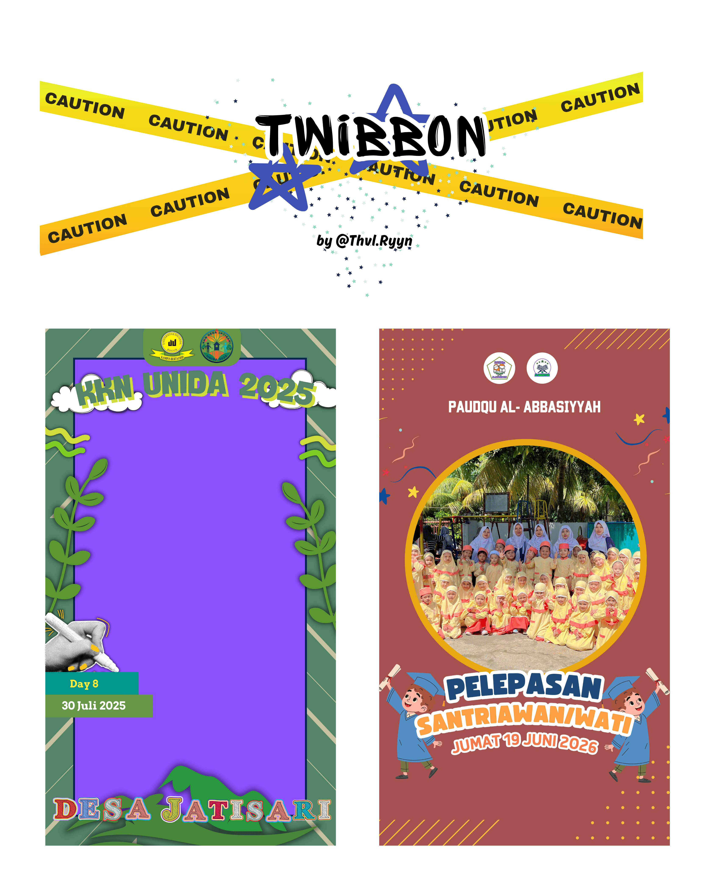
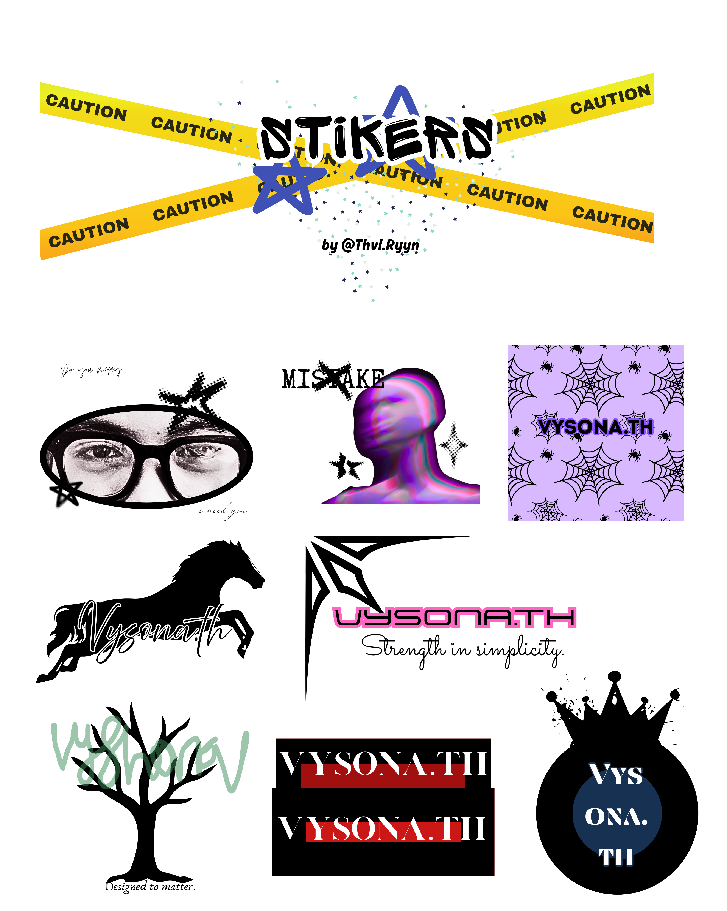

Creative Design Works

About the Project
Creative Design Works is a collection of graphic design projects developed through freelance experience and personal creative projects. The collection showcases various visual works, including logo designs, promotional posters, brochures, apparel and jersey designs, twibbons, banners, and event documentation. Each work was created by translating ideas and project requirements into visual designs that are attractive, communicative, and relevant to their intended purpose.
Design Scope
The collection covers a variety of visual design needs for digital and print media, including:
-
Logo & Brand Identity
-
Banner & Poster
-
Brochure & Promotional Materials
-
Jersey & Apparel Design
-
Twibbon & Social Media Content
-
Event & Activity Documentation
-
Creative Visual Content
Creative Approach
The creative approach begins with understanding the purpose, message, and visual direction of each project. The design process then focuses on combining suitable layouts, colors, typography, imagery, and visual elements to create a clear and engaging composition. Each design is adapted to its specific context, whether it is created for promotional purposes, events, communities, organizations, or personal use.
Design Process
The creative process generally follows several stages:
-
Brief & Concept → Reference & Exploration → Layout & Design → Revision → Final Output
The process may vary depending on the project requirements, design format, and intended use of the final work.
Creative Works
This collection presents a variety of completed designs, ranging from branding and promotional materials to apparel designs, social media content, and event-related visuals. These works reflect my experience in exploring creative ideas, developing visual concepts, and transforming project requirements into practical and engaging designs.
Final Outcome
The result is a diverse collection of creative works that represents my experience in handling different design styles, formats, and visual requirements through freelance and personal projects.
Live Interactive Preview
Try exploring the Canva design preview directly below:
Design Gallery
Logo's

Banner's

Poster's

T-shirt & Jersey

Brosur & Frame

Twibbon's

Sticker's
